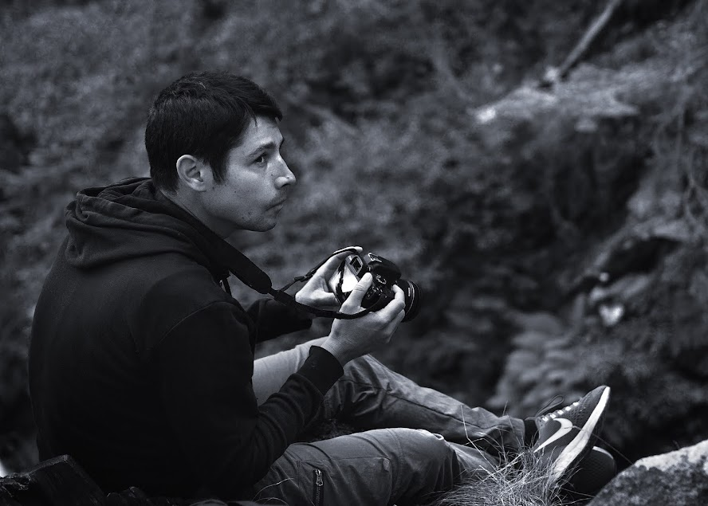
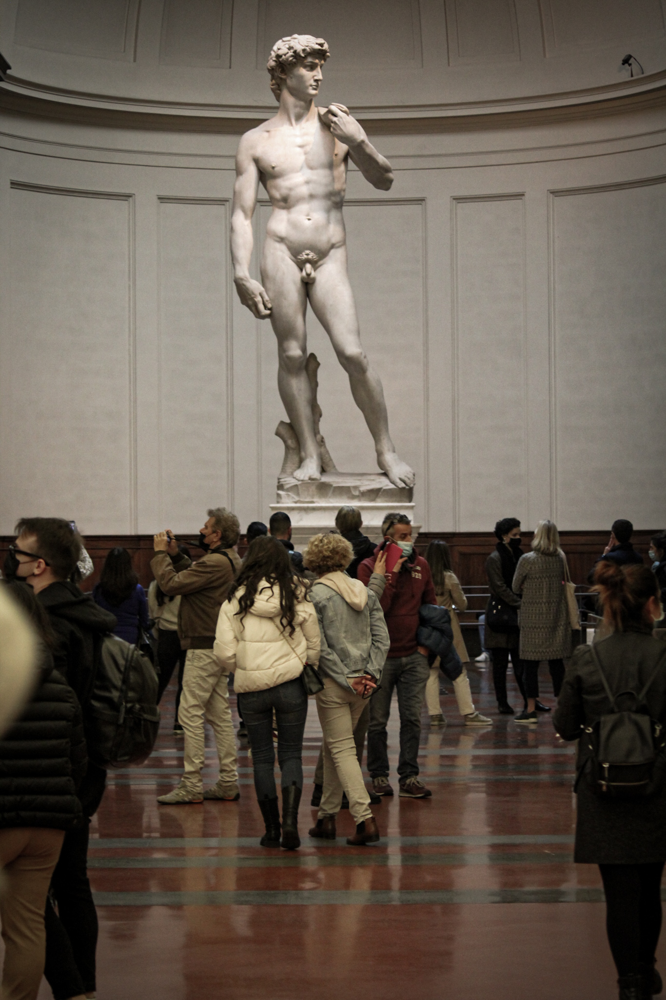
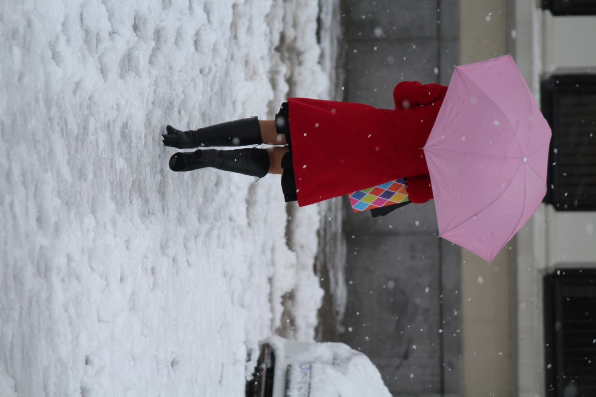
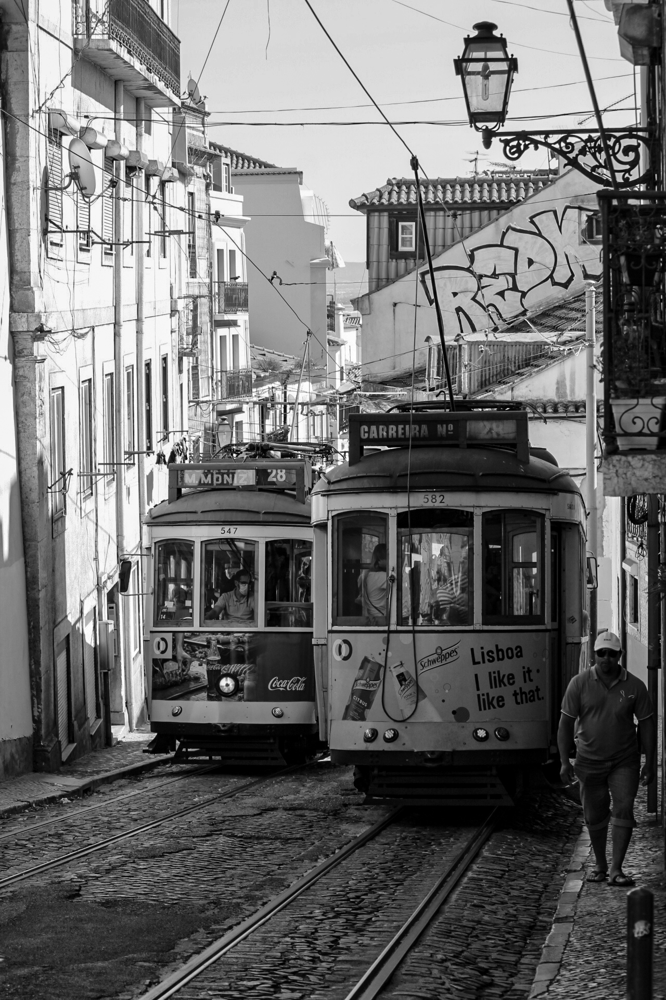
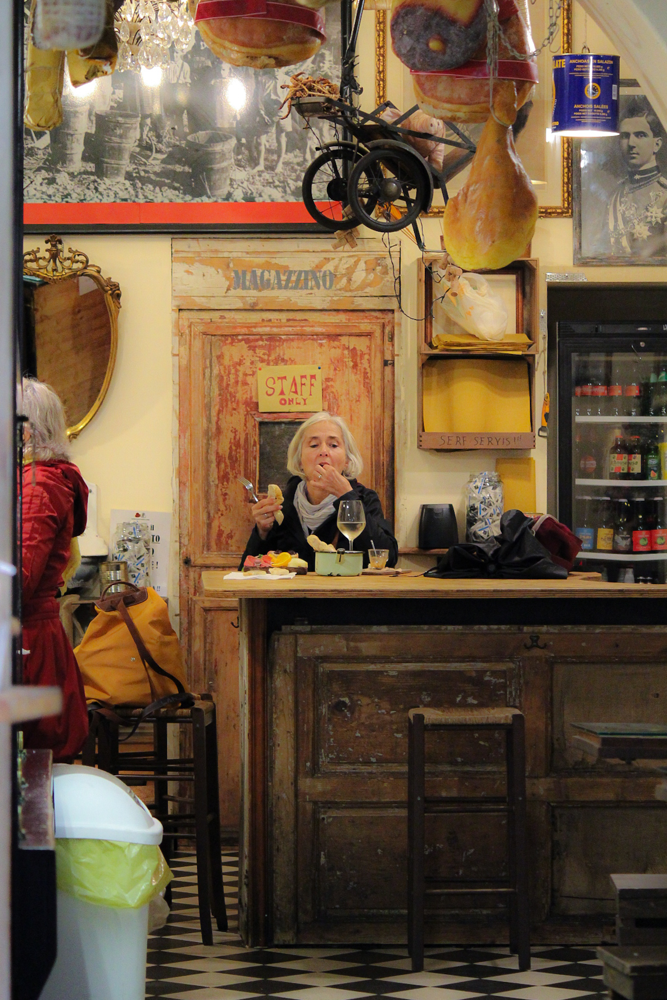
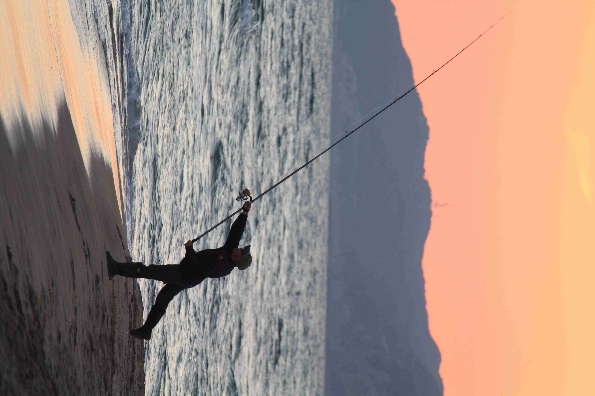
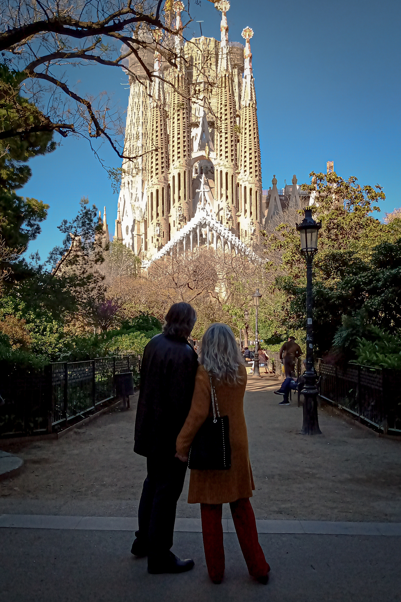
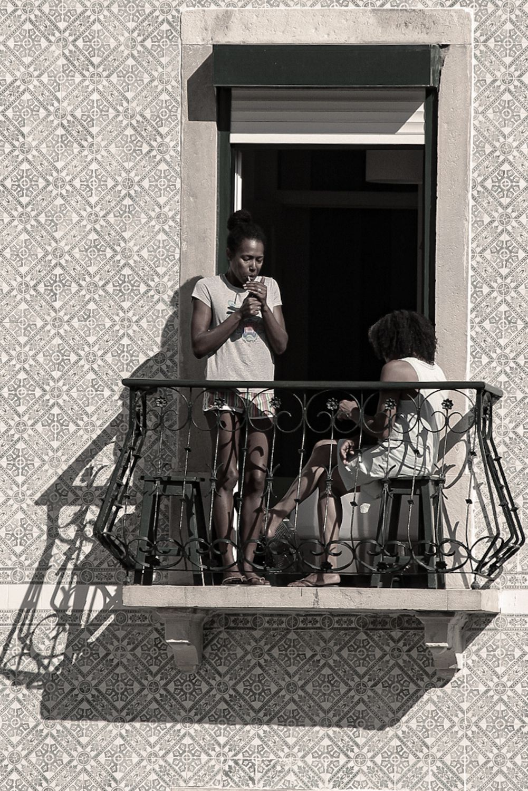
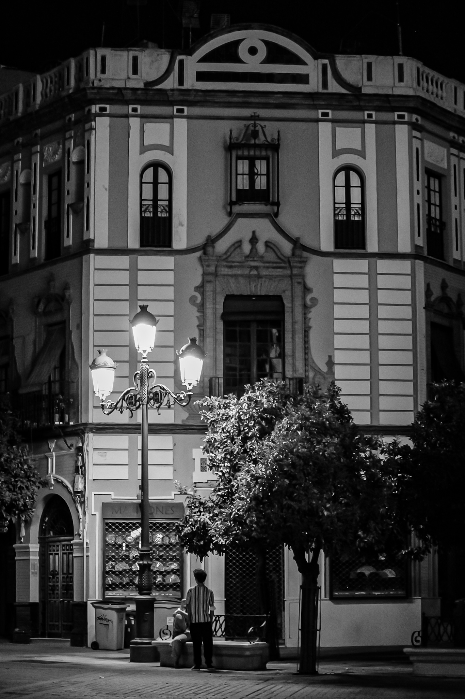

Soy un fotógrafo aficionado al registro de imágenes a través de los viajes. Me gusta capturar momentos sociales y el contraste cultural que se ve en distintos puntos geográficos. Otra actividad que me gusta realizar de forma recreativa y a modo de registro, es la escritura. Por eso te invito a leer los artículos publicados de las ciudades visitadas y la gente que fui conociendo.
Escribir es una actividad que me ayuda a representar ideas y observaciones que aparecen en cada momento que voy viviendo, en cada sensación que aparece al conocer diferentes sociedades y costumbres culturales. Escribir también me ayuda para construir mi historia.